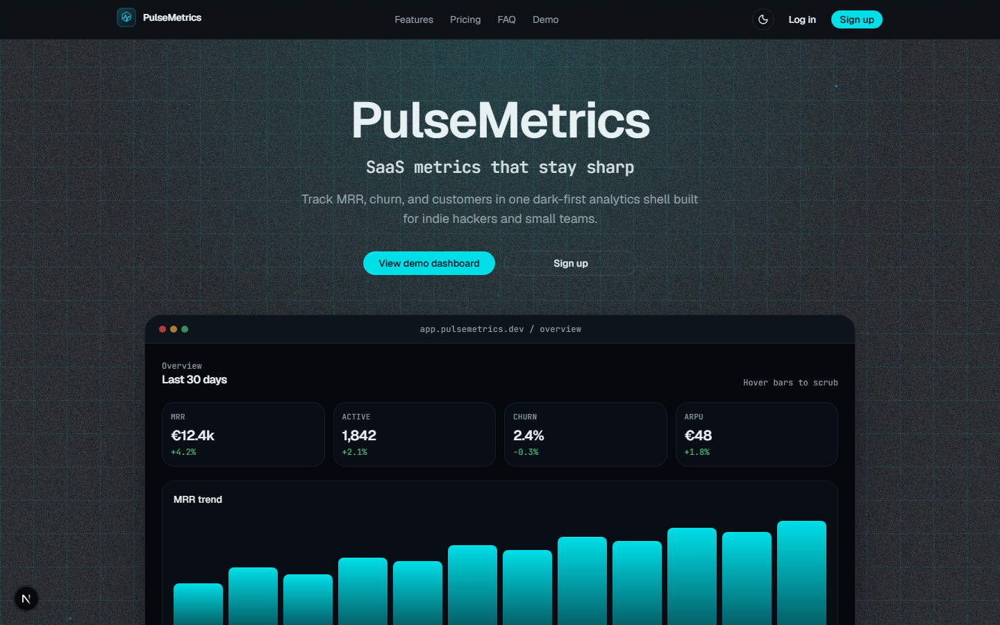
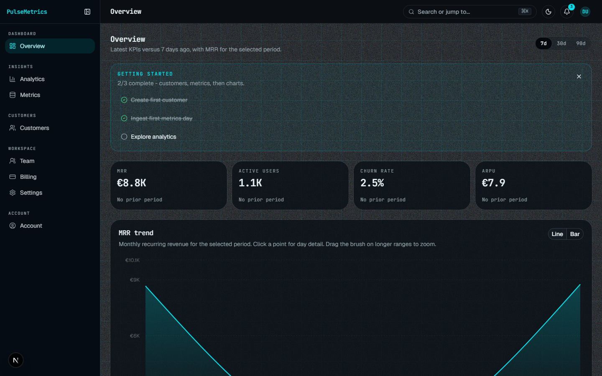

Fluxis Labs portfolio demo
PulseMetrics
SaaS analytics shell with MRR, churn, customers, and hosted Supabase RLS. This page is the public demo surface on GitHub Pages - clone the repo to run the full Next.js app locally.
Product stills
Landing first, then the dashboard MRR overview used in the walkthrough.


Demo login (local / hosted Supabase)
- demo@fluxislabs.com
- Password
- fluxis-demo-2026
Walkthrough path: landing → demo login → customers create/edit/archive → analytics. Full app auth and RLS require running the Next.js project against the hosted Supabase project from the README.